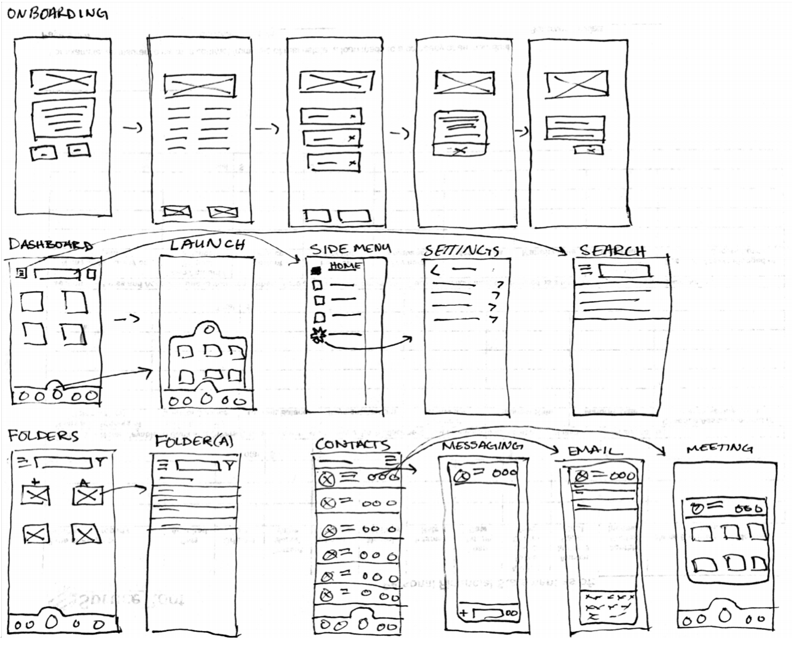

CloudNebula
“More Than Just a Cloud”
A cloud based storage app that allows for collaboration and on the go functionality.
- UX Design
- Visual Design
- Brand & Identity
Design Roles
- User Surveys
- Personas
- Competetives Analysis
- User Stories & Flows
- Sketches
- Wire-Frames
- User Testing
- Visual Design
- Clickable Prototype
Deliverables
- Duration
- 7 weeks
- Tools & Software
- Sketch
- InVision
- Google Forms
- Draw.io
- Usability Hub
Specifications
Overview
This project addressed a very competitive market in the realm of cloud storage. With the likes of Apple, Google, and Microsoft having a firm grasp on user’s; CloudNebula sought to differentiate itself from these prime competitors through the ease of use, functionality across platforms, design esthetics, and ability to be more than just a “cloud storage” app.
- Ability to organize content into folders, groups, tags, categories, etc.
- A one stop shop for users to connect professionally and socially.
- Two way shareability in regards to files and folders; very collaborative.
- Connecting with other users for real-time collaboration in notes or documents.
- Cohesive organizational abilities.
Problem this Product Solves:
Competitive Analysis
From our survey the top three used cloud storage companies were Google Drive, Apple iCloud, and Dropbox. Since these were the most prominently used options for storage, CloudNebula would leverage all the positive options like connectivity that iCloud offers through multiple devices, privacy by Dropbox, and storage amount and ease of use Google Drive offers. It then would make a seamless experience and offer more features.


Survey & Survey Analysis
- 100% of users tested already use some form of cloud storage
- 87% of users tested used Google Drive
- 67% of users tested would like to see better organization options like tags, groups, and folders.
- Of five different payment plans 40% of users would choose either the second most expensive, or most expensive options for most amount of storage.

User Personas

Susie TechUser is a person always on the go and from the beginning of her commute she is already working on projects mobily. Depending on if she is going to her co-working space, coffee shop, or another place with wifi she’ll always switch over to a desktop computer. If her work isn’t finished for the day she’ll need her phone again for the commute home in order to finish work she had been working on during the day.
Joe Techy leads a team of designers in order to make sure projects are done in a timely manner. he also makes sure all objectives are met, and clients and stakeholders are happy. what’s most important to Joe is the collaboration and real-time implementation of design process, as well as being able to have open communication with stakeholders, clients, and employees.
User Stories
We were able to use our data from our surveys and competitive analysis to create user stories and organize them from high to low priority based on the type of user.
Information Architecture
Following our information from our user stories flows were developed for New and Returning users. Detailed paths were created for signing on, creating content, and uploading content. These flows were key and served as a template for the creation of CloudNebula.
Logo Design
CloudNebula is taking a modern approach to app development and design through the use of a more modern color palette with purple, gold hues, and a red CTA button. The white text itself is modern “knockout text” will show up really well on app as well as in desktop form. With the text, color palette, and theme CloudNebula is offering an experience beyond the traditional white backgroud of cloud platforms. It is allowing the user to feel like it's more than just a place to store documents, but as client stated a more social media feel and approach.
Wireframes
Sketches
OnBoarding

All Screens
Using our previous information from user stories and user flows as well as the research that we gathered from our competitors; we then were able to start to assemble some simple low fidelity wireframes for the beginning stages of CloudNebula. I went through and personally signed up for each of the cloud services in the competitive analysis and added parts that I thought were key, and other parts I took out that were either redundant or didn’t need to be there.
Preference Testing
For my preference testing there were a few elements that I myself was unsure of and was curious what the shareholders would have said. The three things that I found to be the hardest was the logo design, color scheme and palette, and layout of the homepage buttons. This was the area in which I set up my preference test.
The logo was difficult because I did choose a very bright color scheme and felt that a simpler design would esthetically be better on the eye. However I didn’t want to lose the hierarchy nor the image of the company. The preference test came back as 50/50 for either logo which I think is ok and I would take this information to the shareholders and give them the option of which one they like best.
The color scheme was the hardest for me to decide on. White is arguably the most popular in cloud storage and social media apps, followed by blue color hues. This would have been the easy choice to delve into a similar palette, but the whole goal of CloudNebula and what was proposed was to differentiate it from the rest and really make it stand out in a field dominated by big companies such as Google and Apple. Again it came back 50/50 so options for the shareholders to take on a bold decision or possibly play it a little safer and similar to other cloud storage options.
Lastly, was the layout and buttons of the homepage. The issue was to make the buttons simple without text or kind of technical with text. 75% of users found that simple was better and that is what we used in the app, so I would relay this to the shareholders as the best viable product for this specific design and app.
Preference TestHigh Fidelity & Clickable Prototype

CloudNebula was set to user as a collaboration app as well as a cloud storage app with the feel of a social media app. A tall order, but what we have been able to accomplish is a fun, but professional design that appeals to many users in many different fields.
Conclusion
One of the biggest challenges facing me in this project was after submitting the user survey and realizing that 100% of users tested have a cloud storage option and 86% of them were indeed content with their cloud storage. In my mind I had to figure out what they were most happy with, and then what the rest of the 14% maybe didn’t like and potentially improve in that area. Through our user testing We were able to figure out where the users wanted more and we leveraged that in CloudNebula.
Another personal challenge that I didn’t necessarily think about ahead of time was the color scheme and branding elements. In our competitive research I realized for the most part all the cloud storage options had a simple white color palette with maybe a little blue. In order for CloudNebula to stand out from the crowd it had to be different in the color field or it would be bundled together with the rest of the cloud storage apps, hence the decision to be a bold purple with gold and yellow accented app.
I feel that the app turned out really really well, but I think that more user testing in the abilities that the app does and potentially refining the color palette even more would further strengthen the competitiveness of CloudNebula going into the full developmental stages.